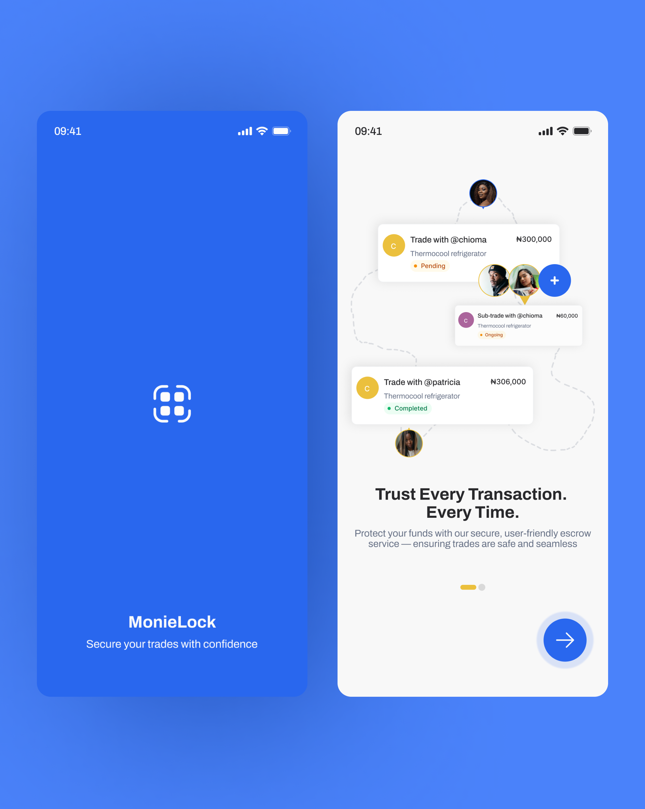
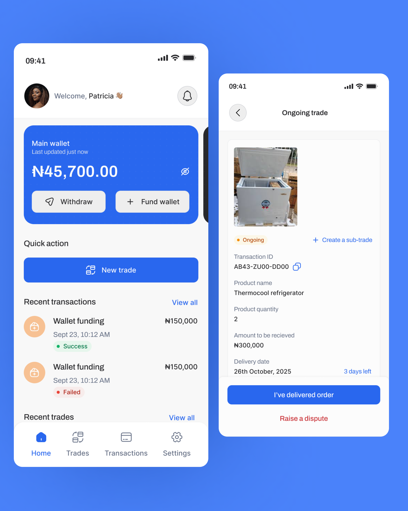
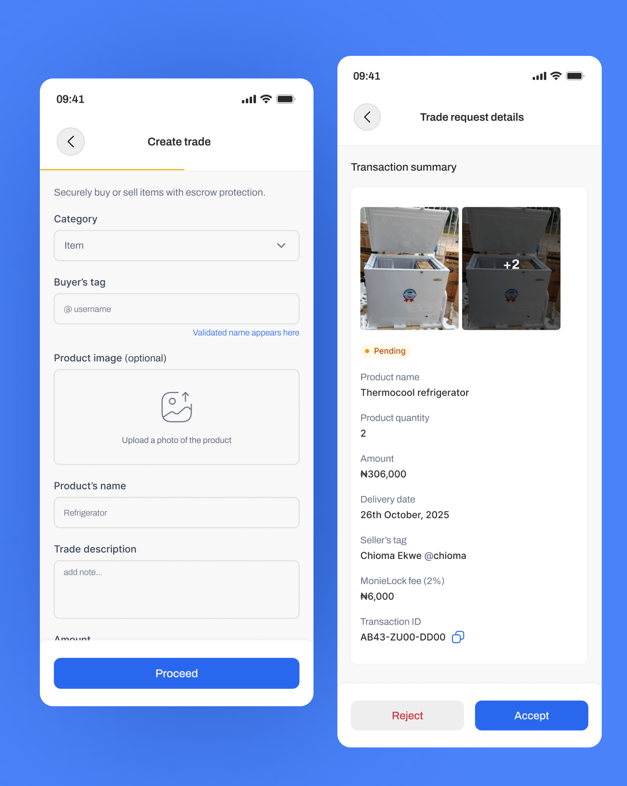
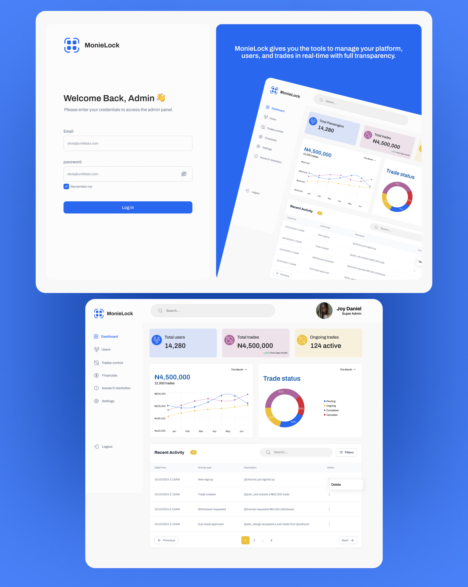
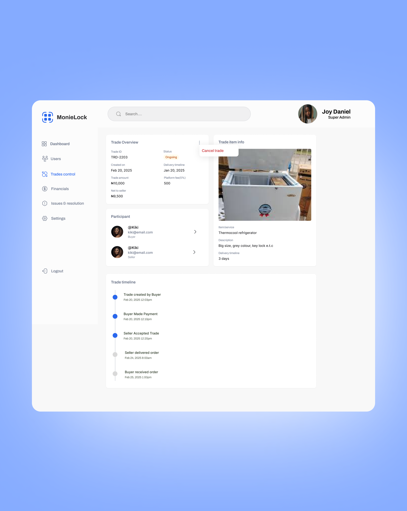
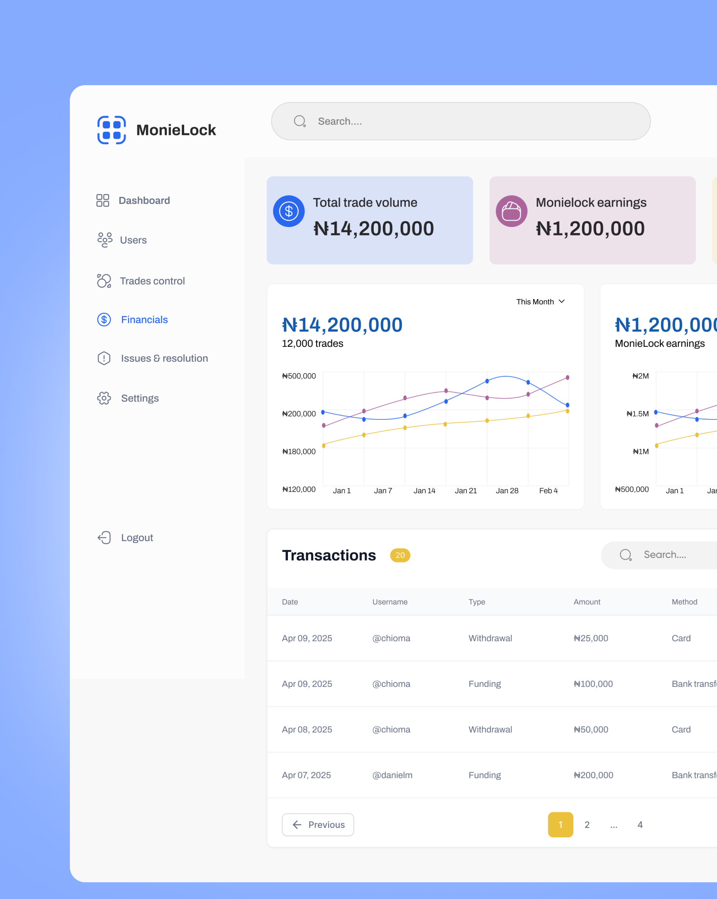

MonieLock
I designed a mobile escrow experience and admin dashboard for people trading with strangers online. The challenge was to make every step, payment, and next action clear without making the trade feel complicated.

THE PROBLEM
Buying or selling with someone you do not know can feel risky. MonieLock was designed to place an escrow step between both sides of a trade, so payment is held while the transaction moves forward. My role covered the mobile app and the admin dashboard used to oversee trades.
A TRADE PEOPLE CAN FOLLOW
Escrow brings more steps than an ordinary transfer. I did not want someone guessing whether the other person had accepted, what happened to the money, or what they should do next. The screens make the trade status and next action visible as the transaction progresses.
A trade begins with the product, amount, and other person’s details. Before accepting a request, someone can review the item, delivery date, fee, and transaction ID. Once the trade is active, the details screen keeps its status and available actions together, including a way to raise a dispute.
FAMILIAR MONEY TASKS
The concept also included KYC onboarding and a wallet. I kept the everyday wallet actions familiar: fund it, withdraw from it, and review transactions. That gives people a recognizable place to manage money while they learn the trade flow.
ADMIN VISIBILITY
The admin dashboard brings trade statuses and recent activity into one view. An individual trade page shows the participants, item, amount, and a timeline of what has happened so far. I also designed views for financial activity and issues, so a team can inspect a trade when something needs attention.
VISUAL DIRECTION
Blue actions and clean white surfaces carry across the mobile and dashboard screens. Status labels use color and plain words such as pending, ongoing, and completed, helping people read where a trade stands at a glance.
The interface designs
What that became.
The screens below show the mobile trade journey and the admin views that support it.





